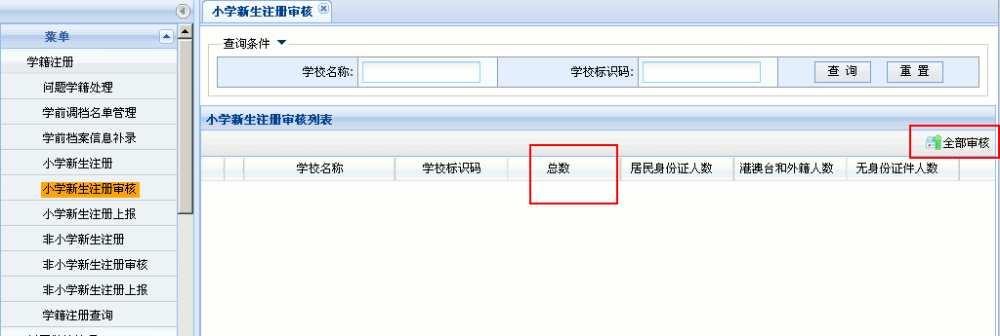
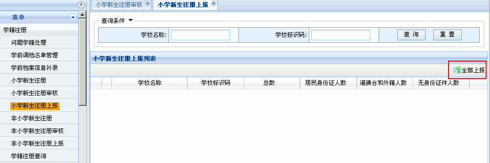

全国中小学生学籍管理系统操作指南
作者：TeliuTe 来源：基础教程网
三、学籍注册、问题学籍处理 返回目录 下一课每年新学年一年级要进行新生注册，而没有学籍的学生可在校生注册；
1、新生注册
1）登录后，点右上角第二个“学籍管理”按钮，然后在左侧栏点第一个“学籍注册－学籍注册”链接；
2）在右侧出来的面板中间，找到一排按钮，点最右边的“学籍导入”；

3）在出来的面板中，依次点“浏览”找到填好的学生信息模板，在业务类别中选择“新生注册”，点右边的“上传”按钮；

4）稍等提示上传完成，点下方的刷新按钮，刷新一下，看处理结果是否成功，如果“失败”点击蓝色链接，查看错误原因，将错误的改正，重复的删除，再重新上传；
5）再在左侧栏点“学籍注册学校审核”链接，在右边面板中，依次选择注册类别，查重状态无问题，点“查询”按钮，全部选中后点右侧的“审核”按钮；

6）全部审核完成后，再全部选中，点击右侧的“上报”按钮，等待上一级管理员审核；

2、问题学籍处理
1）依次点“学籍管理－学籍注册－问题学籍处理”进入，如果是身份证号错误，选中后点“变更”，出现关键数据变更对话框，
输入正确的身份证号，上传证明材料；
２）如果身份证号重复，或其他问题学籍，可以点左侧栏的“问题学籍处理”，查看问题类型；

３）选中后点“查看”，如果是新注册时本校重复，删除后重新上传两个学生的学籍模板，重新注册；
４）如果是跟其他学校重复，需要联系相应学校，两边都处理后，才能解决问题学籍；
５）如果本校是正确的，可点击“佐证”，上传材料等待上一级主管审核处理，不要随意删除已注册的学生；
3、其他
1）学生信息模板，可以在“学籍导入”页面右侧，点击“下载模板”链接，下载后录入学生信息，参考：http://teliute.org/jiaoxue/Tegp8b2013/lesson21/lesson21.html
2）录入前，可以给学生下发新生信息采集表，填写要求参考一年级新生信息采集表，或者直接将电子版学生模板发给学生家长填写；
本节学习了学籍注册的基础知识，如果你成功地完成了练习，请继续学习下一课内容；
本教程由TeliuTe制作|著作权所有
基础教程网：http://teliute.org/
美丽的校园……
转载和引用本站内容，请保留作者和本站链接。